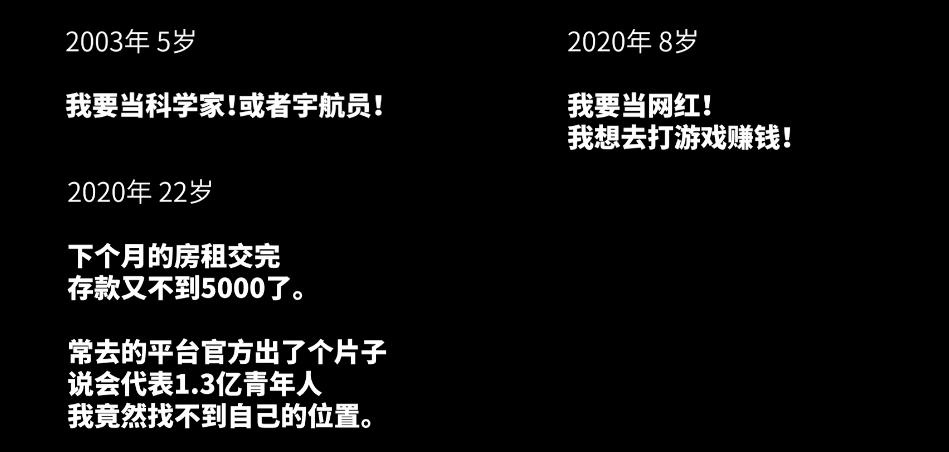
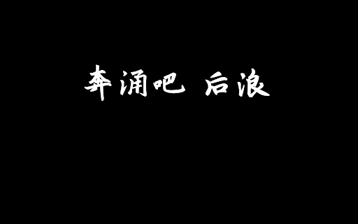

既见君子，云胡不喜！
“长江后浪推前浪，前浪死在沙滩上。”我想这句话是对后浪的褒奖，却并非是所有后浪的宿命。大多数后浪的生命不过是铸造浪潮的一缕泡沫，未曾抵达巅峰就已落潮，散落在万千同类中，泯然于众人，最后消逝如风。
五一假期的时候，看朋友圈的时候，发现有不少同学都转载了 B 站的《后浪》。当时看到了，但是自己没有点开看，因为没什么兴趣，又是一个鸡汤而已。后来，发现上热搜了，央视、人民日报等新闻媒体也都转载了，而且很多人对《后浪》的看法褒贬不一。不管是炒作的广告也好，情怀的鸡汤也罢，我抱着好奇的心态去 B 站上面看了大概 7-8 分钟左右。
- 奔涌吧，后浪
- 请查收，B 站献给新一代的青年宣言片《后浪》。由国家一级演员何冰走上舞台，以青年宣言《后浪》为词，认可、赞美与寄语年轻一代。在 UP 主们的青春混剪中，属于年轻人的光芒正在闪耀。“你们有幸遇见这样的时代，但时代更有幸遇见这样的你们”。
- 浪不起，浪不起
- 我更愿意后浪是那些螺丝钉们，比如抗疫的医生护士志愿者，再比如送好每一份外卖的外卖小哥，送好每一份快递的快递员，为基建作出贡献的工程师，为教书育人辛苦加班的教育工作者，维护城市交通的交警，维护安全的民警和消防员，在我看来这些青年更符合我对后浪的理解。
- 后浪这个视频给我的感觉是，因为我不够浪，所以我甚至都不配叫作“青年”，这个视频里提到的青年生活和我有交集的就只有看电影了。后浪这个视频恶性就恶心在打着全体青年的旗号拍上层阶级的马屁而对金字塔地下的大多数砖块都懒得投上一个镜头！他们，那些只因为家里没钱，出身不好的人，他们拼尽了他们能被叫做青年的所有时光，也许也过不上视频里的生活，看看上海的房价！他们不拼搏吗？他们没价值吗？为什么不愿意给他们，给这个大多数哪怕一个镜头，去为他们发声。冷漠就是最大的蔑视，这就是我很不喜欢这个后浪的原因！
我看了之后，只是感觉这个《后浪》有点太理想主义了。生活中，有时候鸡汤真的挺有用的，我也会时不时的喝一口。但是我们不应该把问题和思考都只停留在表面上，应该深刻的思考思考，生活的本质是什么呢？如何有意思的度过一生呢？怎么成为一个为这个社会尽一份力，让她变得更好呢？
我们看过了太多太多狗血的事情：什么 93 后女孩坐拥 400 套房子，只要看到喜欢的，不问价钱直接买买买；什么大学毕业去夜店，一步一步走上了自己原本不想走的路，不去不回头；什么被外国知名教授性侵之后，忍气吞声一直维持这份关系等等等。太多的时候使我们变的麻木了，让我看到任何事情都不会感到奇怪。什么时候事情没有降临到我们的头上，所以我们只是感叹、唏嘘、无奈。但是有一天事情来了，不偏不倚的砸到了我们头上，我们开始彷徨、呐喊！
- 有人说他今年刚刚 23 岁，应该说才刚刚走向生活，可是人生的一切奥秘和吸引力，对他已经不复存在了。奋斗，已经像那已经过时的电视剧一样，渐渐消失在了，当代年轻人的主流语境中了。
- 张华考上了北京大学，李萍进了中等技术学校，我在百货公司当销售员，我们都有光明的前途。这句话似乎仅仅只存在于新华字典的释义里，就像这本字典本身一样，哪怕我们把它翻烂，学会了所有的汉字，却仍然只会用一个笑中带泪的 emoji 来总结概况，我们的小半段人生。
- 其实，我们的绝大多数焦虑都来自于消费主义，带给我们的落差。社交媒体上，无孔不入的所谓生活方式，教给我们要享受要娱乐要及时行乐。可以我们翻一番，自己干瘪的钱包，哀叹一声。
- 这个世界，永远不会被伤春悲秋者毫无温度的眼泪感动，它只会被不相信命运的傻瓜用无知者无畏的莽力撼动。生于忧患，死于安乐不是老调重提，是无数个唐吉坷德在与风车巨人搏斗了一生之后留下的墓志铭——他们的胜利，不是风车巨人倒下的那一刻，而是我们看到他们背影的那一刻。人定胜天，从女娲补天那时起，我们就这么想。
真因为如此，我自己特别抵制短视频，自己的手机不会安装类似抖音、西瓜视频这样的 APP。因为花费的时候太多了，而且基本吸收不了太多有用的东西，这里当然包括 B 站在内。我们可以打开 B 站的主页，无论是 Web 端还是手机端，推荐给我们的大量无脑无意义的东西。这个 UP 主吃了澳洲龙虾，那个 UP 主直播喷人，还有很多 UP 主读评论、找男朋友等等，数不胜数且跟风的人也很多。
因为我自己也一直在用 B 站的 APP，所以我明显的发现了上述的问题。我们生活在这个时代，获取信息的能力确实变强了，途径也是多种多样的，但是五花八门的肥皂信息也充斥着我们的大脑，让我们很难获取到有用的信息和正确的信息。比如我之前想获取关于 HPV 相关的视频介绍和资料，找了很多地方，包括谷歌、维基百科、应必等，最后发现了《深读视频》这个 B 站专栏。通过动画，通俗易懂的帮我解答了关于这种疾病的各方面的知识，但是关注的人却只有仅仅的几千人而已。相对于 2019 的 B 站百大 UP 主的粉丝来说真的九牛一毛，而其后的视频质量和内容我就不多吐槽了。
其次就是关于直播方面的问题，直播当网红现在已经成为了很多人追求的目标，而其幕后已经衍生了很多团队在干这件事情，如何帮助你迅速成为网红！很多时候，决定你的并不是好的视频内容和好的理念，而是背道而驰。MC 六道因为和杨坤网络上面对喷而被很多人知晓，这就是件很傻逼的事情。还有上届 LOL 全球冠军 FPX 的中单，直播的时候随意骂人，各种脏话，反而粉丝数越来越多，人气越来越火。而且纵观整个直播界的情况，散播低俗趣味和消磨无聊事情的占了绝大多数，但是这些好像都是当代后浪们需要的东西！

我在自己的很多篇随笔中都说了关于梦想的这件事情，想说的就是随着年龄的增加，我们的梦想也在不断地变化。从开始的志向远大(虽然可能是比较虚拟缥缈的)，到后来的满目疮痍，变得我们自己都不认识了。我们总羡慕他人的生活，可以到处旅游，即时享乐！很多时候，发现我们的价值观似乎已经偏离道路了。从出生的时候就已经不在正确，因为出生富裕而认为很多事情都是理所应当的，因为出身贫穷而开始愤世嫉俗、怨天尤人！
包括我在内，很多人现在已经很难在自己空闲的时候举起一本书好好看看一个小时，多半也只是拿起来发个朋友圈而已。因为生活已经被手机、电脑、朋友肢解的七零八落，所以我们很难集中一段时间来认真的干一些事情。而且，懒惰和不自律一直困扰着我们。深陷其中，会原来越难受！

我这个标题其实是一个伪命题，因为我并没有给出自己的答案！因为我也不知道！我需要做的就是多看书、多思考、多身体力行，少看会儿手机多出去走走，陪陪家人，放松放松心情。而剩下的，则留给这里时代的后浪们思考吧！